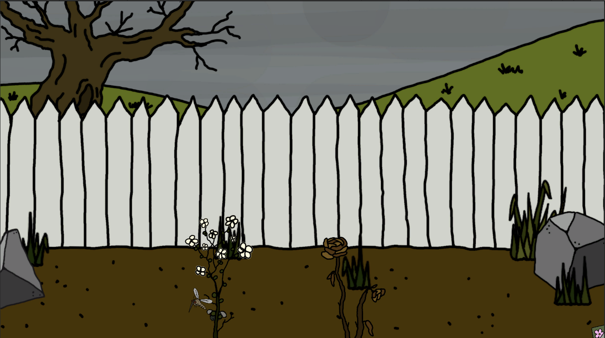

BOID BUGS
PRIMARY TOOL • SECONDARY TOOL • CONTEXT / THEME
Overview
Boid Bugs is an interactive ecosystem simulation inspired by the concept of the insect apocalypse. A demonstration of the delicate balance between natural growth and ecological collapse, as determined by insect populations and human interaction.
Players interact with a field of insects and flowers — each action influencing the overall balance of the system:
- Click on the empty garden soil to plant flowers and attract new insects.
- Click above the garden soil to spray pesticide clouds that eliminate insects.
- The insect population dynamically affects the environment, influencing the sky, trees, and flower health over time.
When the population of insects drops too low, the ecosystem begins to decay. Flowers die off, trees lose their leaves, and the sky turns grey with pollution.


Click image to view gallery